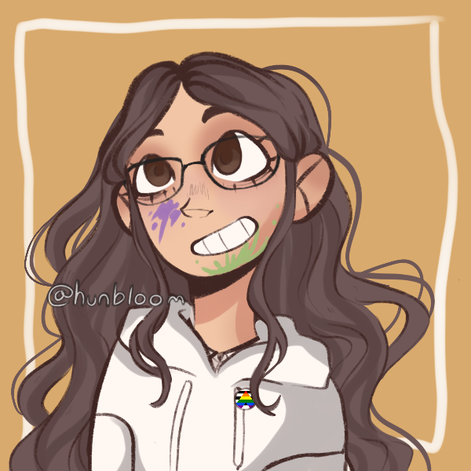

Hello my Fireflies! Welcome to my little corner of the internet, also known as the Fire Paints website! I'm the person behind this channel, and that picture above is how I look in real life! Whether you stumbled across my channel by accident, came here from one of my videos, or just decided to investigate the person behind the screen, welcome! This is all about the person behind the screen! My online name is Firehawk, and I love drawing and creating things, and animation is one of the ways I get to bring my ideas to life. I made Fire Paints to be a place where I can express myself, improve my skills, and share things I enjoy. Outside of content creation, I also enjoy working out and hanging out with my family! Because that's where I get most of my stories. If you find my videos entertaining, Thank you! Because I put a LOT of work into my videos, and I love when people appreciate my work. So lets go everybody! And live life to the fullest!